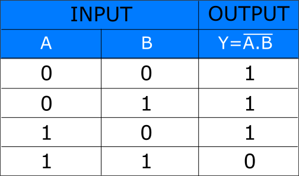
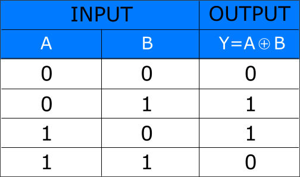

Digital Electronics
Study and verification of truth table of different logic gates
Aim
To study and verify the truth table of AND, OR, NOT, NAND, NOR, XOR, XNOR logic gates.
Theory
Introduction
Logic gates are the basic building blocks of any digital system. Logic gates are electronic circuits having one or more than one input and only one output. The relationship between the input and the output is based on a certain
logic. Based on this, logic gates are named as
1) AND Gate
2) OR Gate
3) NOT Gate
4) NAND Gate
5) NOR Gate
6) XOR Gate
7) XNOR Gate
1) AND Gate
The AND gate is an electronic circuit that gives a high output (1) only if all its inputs are high. A dot (.) is used to show the AND operation i.e. A.B or can be written as AB.
Y = A.B

Figure-1: Logic Symbol of AND Gate
Figure-2: Truth Table of AND Gate
2) OR Gate
The OR gate is an electronic circuit that gives a high output (1) if one or more of its inputs are high. A plus (+) is used to show the OR operation.
Y = A+B

Figure-3: Logic Symbol of OR Gate
Figure-4: Truth Table of OR Gate
3) NOT Gate
The NOT gate is an electronic circuit that produces an inverted version of the input at its output. It is also known as an inverter. If the input variable is A, the inverted output is known as NOT A. This is also shown as A' or A with a bar over the top, as shown at the outputs.
Y = A'

Figure-5: Logic Symbol of NOT Gate
Figure-6: Truth Table of NOT Gate
4) NAND Gate
This is a NOT-AND gate which is equal to an AND gate followed by a NOT gate. The outputs of all NAND gates are high if any of the inputs are low. The symbol is an AND gate with a small circle on the output. The small circle represents inversion.
Y = A.B

Figure-7: Logic Symbol of NAND Gate
Figure-8: Truth Table of NAND Gate
5) NOR Gate
This is a NOT-OR gate which is equal to an OR gate followed by a NOT gate. The outputs of all NOR gates are low if any of the inputs are high. The symbol is an OR gate with a small circle on the output. The small circle represents inversion.
Y = A+B

Figure-9: Logic Symbol of NOR Gate
Figure-10: Truth Table of NOR Gate
6) XOR Gate
The 'Exclusive-OR' gate is a circuit which will give a high output if either, but not both of its two inputs are high. An encircled plus sign (⊕) is used to show the Ex-OR operation. Ex-OR gate is created from AND, NAND and OR gates.The output is high only when both the inputs are different.
Y = A⊕B

Figure-11: Logic Symbol of XOR Gate
Figure-12: Truth Table of XOR Gate
7) XNOR Gate
The 'Exclusive-NOR' gate circuit does the opposite to the EX-OR gate. It will give a low output if either, but not both of its two inputs are high. The symbol is an EX-OR gate with a small circle on the output. The small circle represents inversion.Ex-NOR gate is created from AND, NOT and OR gates.The output is high only when both the inputs are same.
Y = A⊕B

Figure-15: Logic Symbol of XNOR Gate
Figure-16: Truth Table of XNOR Gate
Procedure
1) AND Gate
Step-1) Press the power supply switche  to connect supply to the circuit.
to connect supply to the circuit.
Step-2) Press the switches for inputs "A" and "B".
The switch in ON state is  and the switch in OFF state is
and the switch in OFF state is  .
.
Step-3) The output LED glows if both the switches are OFF else it won't glow.
The LED in OFF state is  and the LED in ON state is .
and the LED in ON state is .
Step-4) Repeat step-2 and step-3 for all state of inputs.
2) OR Gate
Step-1) Press the power supply switche to connect supply to the circuit.
Step-2) Press the switches for inputs "A" and "B".
The switch in ON state is and the switch in OFF state is .
Step-3) The output LED glows if any one or both the switches are ON else it won't glow.
The LED in OFF state is and the LED in ON state is .
Step-4) Repeat step-2 and step-3 for all state of inputs.
3) NOT Gate
Step-1) Press the power supply switche to connect supply to the circuit.
Step-2) Press the switche for inputs "A".
The switch in ON state is and the switch in OFF state is .
Step-3) The output LED glows if switch is OFF else it won't glow.
The LED in OFF state is and the LED in ON state is .
Step-4) Repeat step-2 and step-3 for all state of inputs.
4) NAND Gate
Step-1) Press the power supply switche to connect supply to the circuit.
Step-2) Press the switches for inputs "A" and "B".
The switch in ON state is and the switch in OFF state is .
Step-3) The output LED glows if any one or both the switches are OFF else it won't glow.
The LED in OFF state is and the LED in ON state is .
Step-4) Repeat step-2 and step-3 for all state of inputs.
5) NOR Gate
Step-1) Press the power supply switche to connect supply to the circuit.
Step-2) Press the switches for inputs "A" and "B".
The switch in ON state is and the switch in OFF state is .
Step-3) The output LED glows if both the switches are OFF else it won't glow.
The LED in OFF state is and the LED in ON state is .
Step-4) Repeat step-2 and step-3 for all state of inputs.
6) XOR Gate
Step-1) Press the power supply switche to connect supply to the circuit.
Step-2) Press the switches for inputs "A" and "B".
The switch in ON state is and the switch in OFF state is .
Step-3) The output LED glows if one of the switches is ON and one of the switches is OFF else it won't glow.
The LED in OFF state is and the LED in ON state is .
Step-4) Repeat step-2 and step-3 for all state of inputs.
7) XNOR Gate
Step-1) Press the power supply switche to connect supply to the circuit.
Step-2) Press the switches for inputs "A" and "B".
The switch in ON state is and the switch in OFF state is .
Step-3) The output LED glows if both the switches are ON or if both the switches are OFF else it won't glow.
The LED in OFF state is and the LED in ON state is .
Step-4) Repeat step-2 and step-3 for all state of inputs.
Simulator
Observation
Observe truth table for all logic gates and verify with truth table given in theory section.
References
- William Gothmann H, Digital Electronics : An Introduction To Theory And Practice, Prentice Hall, 2nd ed. 1982
- M. Morris Mano, Michael D Ciletti, "Digital Design", Pearson, 4th ed. 2008
- Thomas L. Floyd, R. P. Jain, "Digital Fundamentals", Pearson, 11th ed. 2017
- S Salivahanan, S Arivazhagan, "Digital Circuits and Design", Vikas Publishing House Pvt Ltd., 3rd ed. 2009
- Ronald J. Tocci, Neal S. Widmer, Gregory L. Moss, "Digital Systems", Pearson, 10th ed. 2009
- Anil K. Maini, "Digital Electronics: Principles, Devices and Applications", Wiley-Blackwell, 2007
- Verification and interpretation of truth table for logic gates: https://de-iitr.vlabs.ac.in/digital-electronics-iitr/exp/truth-table-gates/theory.html
- Digital Logic Gates: https://www.electronics-tutorials.ws/logic/logic_1.html